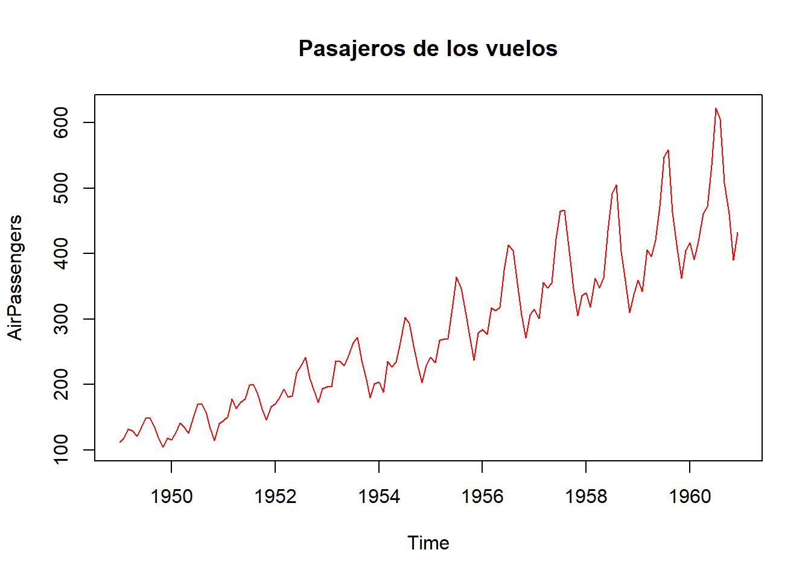
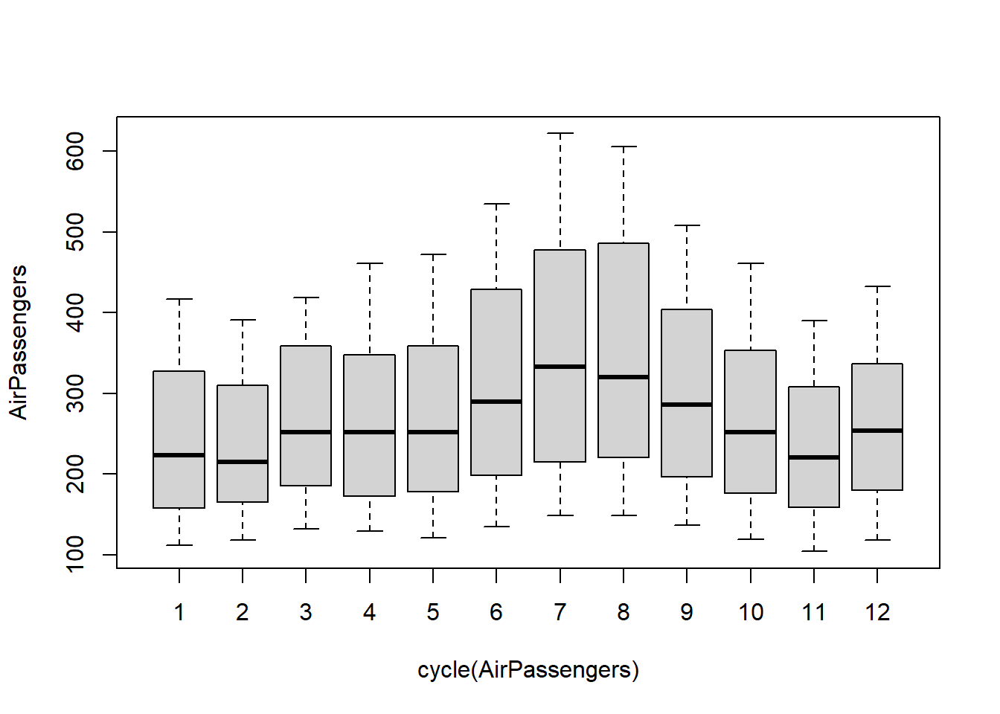

pacman::p_load(WDI,
tidyverse, wooldridge)1 Introduction
Las series temporales son observaciones a lo largo del tiempo (Stock y Watson 2012) . Por ejemplo, oferta monetaria, precios de las acciones, PIB, ventas, etc. Debido a que los eventos pasados pueden influir sobre los eventos futuros y los comportamientos rezagados son frecuentes en las ciencias sociales, el tiempo es una dimensión importante en las bases de datos de series de tiempo. A diferencia de los datos de corte transversal, en una serie de tiempo el orden cronológico de las observaciones proporciona información potencialmente importante (Wooldridge 2009). No se pueden tomar muestras.
data("AirPassengers")
str(AirPassengers) Time-Series [1:144] from 1949 to 1961: 112 118 132 129 121 135 148 148 136 119 ...#Graficando la serie
plot(AirPassengers,
main="Pasajeros de los vuelos",
col="red")
Una característica fundamental de los datos de series de tiempo, que las hace más difíciles de analizar que los datos de corte transversal, es que rara vez, si acaso, puede suponerse que las observaciones económicas sean independientes en el tiempo. La mayor parte de las series de tiempo económicas y otras series de tiempo están relacionadas, a menudo fuertemente, con sus historias recientes. Por ejemplo, saber algo sobre el producto interno bruto del último trimestre dice mucho acerca del rango probable del PIB durante este trimestre, debido a que el PIB tiende a permanecer bastante estable de un trimestre a otro. Aunque la mayor parte de los procedimientos econométricos pueden usarse tanto con datos de corte transversal como con datos de series de tiempo, la especificación de modelos econométricos para datos de series de tiempo requiere un poco más de trabajo para que se justifique el uso de los métodos econométricos estándar.
Otra característica de las series de tiempo que puede requerir atención especial es la periodicidad de los datos, la frecuencia con que éstos se recolectan. En economía, en finanzas, las frecuencias más comunes son diaria, semanal, mensual, trimestral y anual. Así, por ejemplo, los precios de las acciones se publican cada día (con excepción de sábados y domingos); la cantidad de dinero en circulación se publica de manera semanal; muchas series macroeconómicas se registran cada mes, incluidas las tasas de inflación y de desempleo. Otras series macroeconómicas se registran con menos frecuencia, por ejemplo, cada tres meses (o cada trimestre). El producto interno bruto es un ejemplo importante de una serie trimestral. Otras series de tiempo, como la tasa de mortalidad infantil en Estados Unidos, sólo están disponibles anualmente (Wooldridge 2009).
Muchas series de tiempo económicas semanales, mensuales o trimestrales muestran un fuerte patrón estacional, que puede ser un factor importante en el análisis de una serie de tiempo. Por ejemplo, los datos mensuales sobre la construcción de vivienda varían con los meses, debido simplemente a la variación de las condiciones climatológicas .
Concepto a ser reforzado, una primera aproximación, es el concepto de tendencia
boxplot(AirPassengers~cycle(AirPassengers))
1.1 Partes de una serie temporal
Toda serie temporal o serie de tiempo exhibe tres partes, la tendencia, la estacionalidad y los errores como la parte estocástica
\[y_t= Tendencia + Estacionalidad+residuos\]
# Descomponer a la serie
plot(decompose(AirPassengers))
Series temporales: datos registrados para una única entidad individual para diferentes momentos de tiempo
Las ST o TS son útiles para responder preguntas causales para las que los datos de sección cruzada son inadecuados
¿Cuál es el efecto de un cambio legislativo cuando el cambio se produce y en el futuro?
¿Cuál es la mejor predicción de una variable en una fecha futura?
Predicción y Modelos Autorregresivos en Series Temporales En el análisis económico y de datos, una de las distinciones fundamentales es la que existe entre la predicción y la estimación de efectos causales. Mientras que la inferencia causal busca responder preguntas del tipo “¿qué pasaría si…?”, la predicción se enfoca simplemente en anticipar eventos futuros a partir de la información disponible en el presente. Esta diferencia, aunque sutil en apariencia, tiene profundas implicaciones metodológicas y conceptuales.
Un ejemplo ilustrativo lo encontramos al observar a los peatones con paraguas en la calle. Un modelo predictivo podría señalar con gran precisión que lloverá pronto si se observa esta escena. Sin embargo, el uso del paraguas no causa la lluvia. Aquí se hace evidente que un modelo puede tener alto poder predictivo sin que sus variables tengan interpretaciones causales. Esta distinción es esencial en nuestra aproximación al análisis de series temporales, especialmente cuando nuestro objetivo es predecir sucesos futuros más que identificar relaciones estructurales.
Desafíos de las Series Temporales El trabajo con datos de series temporales conlleva desafíos únicos. A diferencia de los datos de sección cruzada, en donde se analizan múltiples unidades en un solo punto del tiempo, las series temporales se enfocan en la evolución de una sola unidad a lo largo del tiempo. Esto introduce una dimensión dinámica y secuencial que exige nuevas técnicas y supuestos. Por ejemplo, la autocorrelación —la relación entre los valores presentes y pasados de la misma variable— puede violar los supuestos clásicos de independencia de errores, lo que invalida el uso directo de muchos métodos estadísticos tradicionales.
1.2 Modelos Predictivos sin Interpretación Causal
Un modelo de regresión aplicado a datos de sección cruzada puede ser útil para predecir una variable de interés, incluso si no permite inferencias causales válidas. Esto es particularmente relevante cuando el objetivo práctico es simplemente anticipar resultados futuros. En este semestre, nos enfocaremos justamente en esa tarea: utilizar series temporales para la predicción de sucesos futuros, empleando únicamente la información disponible hasta el presente.
Una estrategia natural en este contexto es usar los valores presentes y pasados de una variable para predecir sus valores futuros. Este razonamiento nos lleva directamente a los modelos autorregresivos (AR), que ocupan un lugar central en la literatura de series temporales. En su forma más simple, un modelo AR usa una combinación lineal de los valores pasados de la propia variable como predictores. Por ejemplo, un modelo AR(1) sugiere que el valor actual de la serie depende linealmente de su valor en el periodo anterior.
Estos modelos pueden ser además enriquecidos con variables predictoras adicionales, dando lugar a modelos como el ARX (autorregresivo con variables exógenas), lo cual incrementa su poder predictivo. Es importante recalcar que, aunque estos modelos pueden ser extremadamente precisos en sus predicciones, no implican relaciones causales entre las variables.
1.3 La Importancia de la Visualización y la Estacionariedad
Una primera herramienta clave en el análisis de series temporales es la representación gráfica de los datos. Visualizar la serie nos permite detectar patrones como tendencias, estacionalidades, rupturas estructurales y otros comportamientos relevantes. Esta etapa exploratoria es fundamental para decidir qué tipo de modelo puede ajustarse mejor a los datos.
Además, el análisis de series temporales debe distinguir entre dos grandes clases de modelos: estacionarios y no estacionarios. Una serie es estacionaria cuando sus propiedades estadísticas —como la media, la varianza y la autocorrelación— son constantes en el tiempo. En contraste, las series no estacionarias presentan cambios estructurales que pueden sesgar las estimaciones y predicciones si no se tratan adecuadamente. Por tanto, entender qué es una serie temporal en términos matemáticos y estadísticos es un primer paso indispensable antes de proceder a cualquier modelado.